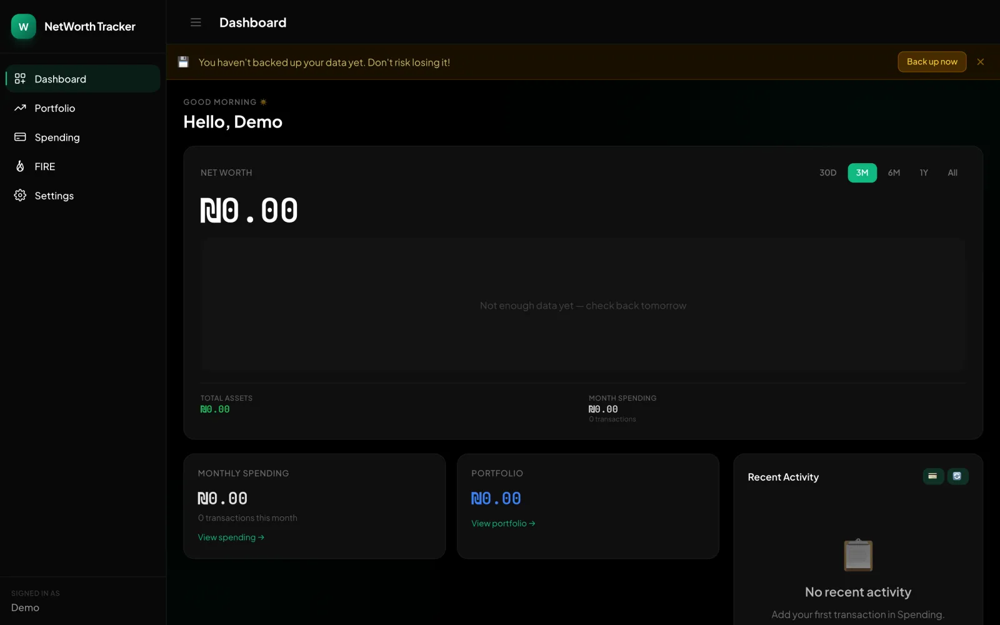
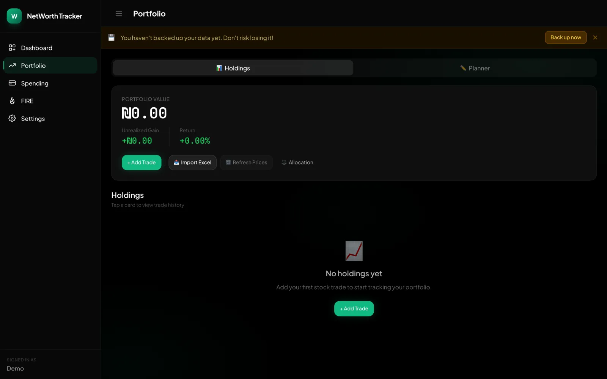
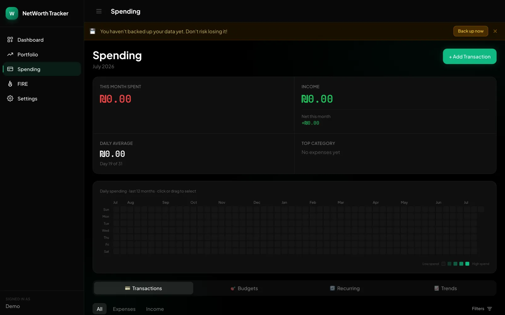
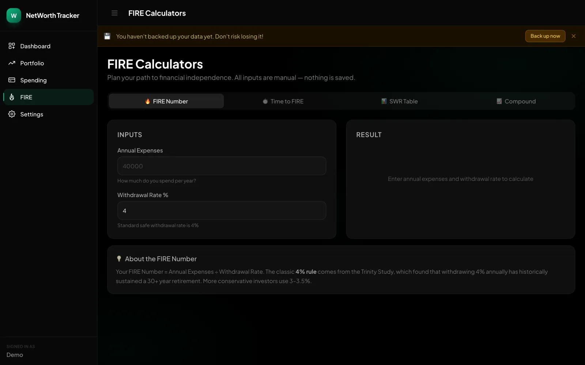

NET WORTH TRACKER
Redesigning a net worth tracker so a 30-second glance feels as trustworthy as a deep dive

The problem This started as an existing net worth tracker — it worked, but it looked and felt like a spreadsheet someone had coloured in. The same balance appeared in three different weights. A floating “+” button hovered over the content and never said what it added. The retirement calculator — a thing you set up once a year — lived on the home screen you open every day. It did the maths; it just didn’t feel like something you’d trust with your money. [Replace with your own framing — and a real detail or quote if you have one.]



My role I redesigned it end to end, built its design system, and then rebuilt the front-end myself — vibecoding the whole thing with AI assistance. Designing and shipping in the same head was the most useful constraint in the project: I couldn’t propose a chart Recharts couldn’t draw, or a token that wouldn’t map cleanly to a CSS variable, so every decision was pressure-tested against what it would actually cost to build.
User story Meet the intentional investor: financially literate, FIRE-minded, and in the habit of checking their money — not out of anxiety, but because they like to feel in control. They’d take a calm, precise interface over a busy one every time. They use the app two ways. Most days it’s a checking glance — thirty seconds, “am I still on track?”, done before the phone is fully unlocked. Once a week it’s a deep dive: rebalancing, reading the trend, adjusting a goal. The old app treated both the same. As an intentional investor, I want to see where I stand in a single glance and go deeper only when I choose to — so I can trust the number without living in the app. So I designed the glance first, and made the deep dive earn its complexity behind it.
One rule for what goes where I gave myself a single rule to settle every layout argument: an element’s prominence should match how often it’s used, times how relevant it is right now. It sounds obvious written down, but it’s the reason the retirement calculator moved off the home screen and a glanceable progress card took its place — you monitor a goal daily, you configure it twice a year. Same feature, split by frequency of use.

Killing the floating button The floating “+” is a mobile cliché: one ambiguous control that hides what it does and covers the content underneath. I first tried to make it smarter. Then I cut it. In its place, three labelled actions — Trade, Income, Expense — sit where you’d actually use them, each saying exactly what it does. I changed my mind on this one mid-project: the first direction was cleverer, the second was clearer.
Numbers you can trust Nothing erodes confidence in a finance app faster than figures that don’t line up. The old screens mixed weights and skipped thousands separators, so a balance looked slightly different in every place it appeared. I set every number in one tabular treatment — same face, aligned decimals, comma thousands — so a value reads as the same value everywhere. Trust in a finance product is mostly consistency.
Colour only where money moves The whole interface is greyscale except for one thing: money direction. Lime for a gain, orange for a loss, and nothing else coloured at all — the accent, the nav, the primary button are all monochrome. It ties colour to meaning instead of decoration, and it keeps the dashboard calm until something actually moves. I trialled a warmer palette and a violet accent and threw both out; they were nice, but they didn’t mean anything. One honest trade-off: the orange fails WCAG contrast as small text on white (about 2.8:1). I kept it — the identity was worth more than the guideline here — and I documented the decision rather than pretend it wasn’t one.
A design system nobody was using The file already had a spacing scale. Almost nothing used it — 19 properties in the entire design file were actually bound to a spacing token, and the single most common value, the standard card padding, wasn’t even on the scale. The system existed as documentation, not as a constraint. I bound the whole file to it, from 19 properties to roughly 8,360, and rewrote 252 spacing classes in the code to match. The interesting part wasn’t the mechanical snapping; it was where the rule broke down. Half the off-scale values sat exactly between two tokens, so “snap to nearest” was a coin flip a thousand times over, and the button sizes collapsed onto each other until I hand-set them back apart. A system serves the design, not the reverse — the exceptions are the point.
Every state, on purpose The button had one look; I gave the system nine — every combination of style and state, plus loading and disabled. Empty, loading, error, and success were designed rather than discovered in production. Unglamorous work, but it’s the difference between a screen and a product.
What shipped, and what I learned It shipped: the redesign is live, built on the token system, in light and dark from a single source of truth. What I took from it is that vibecoding my own designs made me a better designer, not a slower one — I killed ideas early because I knew what they’d cost to build, and I trusted the ones that survived.